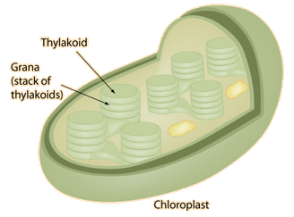

Chloroplasts
The sketch of the chloroplast above was made from an electron micrograph of a chloroplast from a higher order plant (Levy). Plants use energy from the sun in tiny energy factories called chloroplasts. Using chlorophyll in the process called photosynthesis, they convert the sun's energy into storable form in ordered sugar molecules such as glucose. In this way, carbon dioxide from the air and water from the soil in a more disordered state are combined to form the more ordered sugar molecules.
|  | Inside the chloroplasts are stacks of discs called thylakoids. They are compared to stacks of coins within the walls of the chloroplast, and they act to trap the energy from sunlight. |
The stacks of thylakoids are called grana. They are connected with an extensive sytem of tubules. The thylakoid membranes contain chlorophyll and other pigments arranged in antenna arrays to capture light energy for two photosystems called Photosystem I and Photosystem II. In most plants, both photosystems are used in an electron transport process that yields energy in the form of ATP and reduced coenzymes to the stroma of the chloroplast to be used in the synthesis of carbohydrates. The energy is used in the Calvin cycle to fix carbon from atmospheric CO2 and construct sugars.
Order can be produced with an expenditure of energy, and the order associated with life on the earth is produced with the aid of energy from the sun.
| Qualitative statements of the Second Law of Thermodynamics |
| Order from disorder in biological systems |
| Energy cycle in living things |
| More on chloroplast structure |
Photosynthesis Concepts
Second law concepts
Reference
Levy
Ch 4
| HyperPhysics***** Thermodynamics ***** Biology | R Nave |